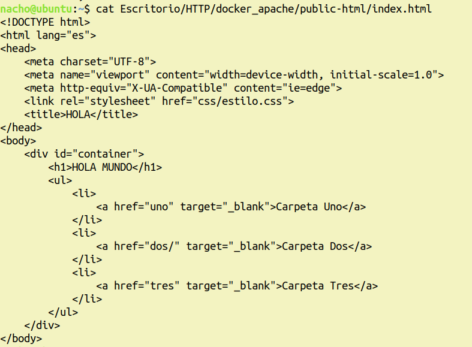
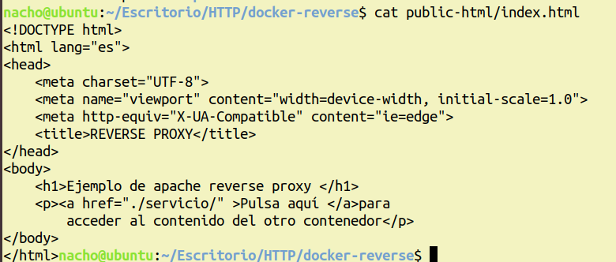

APACHE
Lo primero será hacer el árbol de directorios que usaremos.
Creamos un idex.html en public-html para que cuando lo tengamos todo funcionando, salga nuestra página web.
Hacemos un dockerfile, el cual, de momento solo tenemos que tener este contenido, ya lo iremos cambiado.
Hacemos la imagen que vamos a usar con "docker build -t mi-imagen-apache2 ." y ya podremos crear nuestro contenedor con "docker run -dit mi-container-apache mi-imagen-apache2"
IMPORTANTE
Cada vez que queramos guardar un cambio, habrá que re hacer la imagen y el contenedor para que el cambio se haga.
Para borrar el contenedor, primero tenemos que pararlo, y despues lo podremos borrar.
Seguimos
Nos vamos al docker file para añadir que copie el httpd.conf a nuestro contenedor, añadimos la siguiente línea.
Vamos a crear el archivo _htpasswd, para ello, instalamos "apache2-utils" y hacemos "htppasswd -c _htpasswd usuario"
Y seguidamente, volvemos a modificar el dockerfile para que este archivo se añada a la nueva imagen que creemos.
Vamos a añadir autenticación a nuestro Apache, nos metemos en httpd.conf y añladimos lo siguiente al final de todo.
También añadiremos autenticación DIGEST, para ello hacemos "htdigest -c .htdigest restringido pepe", añadimos lo siguiente en el dockerfile, y añadimos tmabién lo siguiente abajo de lo añadido antes en httpd.conf
Ahora, haremos un scrip que automatice el proceso de crear imagenes y contenedors, y le añadiremos para que tenga certificación SSL.
El archivo se debe de llamar reload.sh y tendrá lo siguiente.
Y como última modificación del dockerfile, añadimos lo siguiente.
REVERSE
Ahora vamos a hacer que apache funcione como reverse proxy.
Primero creamos este árbol de directorios.
Y creamos un index.html con el contenido que queramos.
Hacemos un dockerfile con este contenido.
Y un reload.sh con este contenido.